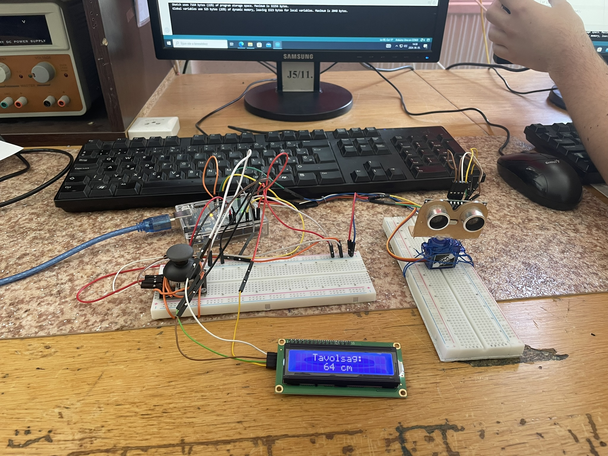

Arduino projektem
Ez még fejlesztés alatt...🔨
Felhasznált eszközök:
Arduino Uno
Szervómotor SG90
LiquidCrystal I2C LCD
Ultrahangos távolságmérő szenzor HC-SR04
Joystick
Breadboard
Jumper kábelek

A Projekt kezdetleges fázisa

A végső, befejezett projekt
Manuális mód
Pásztázás funkció
Kattints ide a programkód megtekintéséhez
#include
#include
#include
LiquidCrystal_I2C lcd(0x27, 16, 2);
Servo radarServo;
Servo joystickServo;
const int trigPin = 8;
const int echoPin = 9;
long duration;
int distance;
int joyX = A1;
int joyButton = 2;
bool isPanning = false;
int panDirection = 1;
int panAngle = 90;
unsigned long previousMillis = 0;
const long interval = 1000;
void setup() {
lcd.init();
lcd.backlight();
lcd.setCursor(0, 0);
lcd.print("Initializing...");
radarServo.attach(11);
joystickServo.attach(10);
pinMode(trigPin, OUTPUT);
pinMode(echoPin, INPUT);
pinMode(joyButton, INPUT_PULLUP);
Serial.begin(9600);
lcd.clear();
lcd.setCursor(0, 0);
lcd.print("Ready!");
}
void loop() {
int valX = analogRead(joyX);
int joystickAngle = map(valX, 0, 1023, 0, 180);
joystickServo.write(joystickAngle);
if (digitalRead(joyButton) == LOW) {
delay(50);
if (digitalRead(joyButton) == LOW) {
isPanning = !isPanning;
if (isPanning) {
panAngle = 90;
radarServo.write(panAngle);
delay(500);
}
while (digitalRead(joyButton) == LOW);
delay(50);
}
}
if (isPanning) {
radarServo.write(panAngle);
panAngle += panDirection;
if (panAngle <= 0 || panAngle >= 180) {
panDirection = -panDirection;
}
delay(20);
} else {
radarServo.write(joystickAngle);
}
unsigned long currentMillis = millis();
if (currentMillis - previousMillis >= interval) {
previousMillis = currentMillis;
digitalWrite(trigPin, LOW);
delayMicroseconds(2);
digitalWrite(trigPin, HIGH);
delayMicroseconds(10);
digitalWrite(trigPin, LOW);
duration = pulseIn(echoPin, HIGH);
distance = duration * 0.034 / 2;
lcd.clear();
lcd.setCursor(3, 0);
lcd.print("Tavolsag:");
lcd.setCursor(5, 1);
lcd.print(distance);
lcd.print(" cm");
}
}